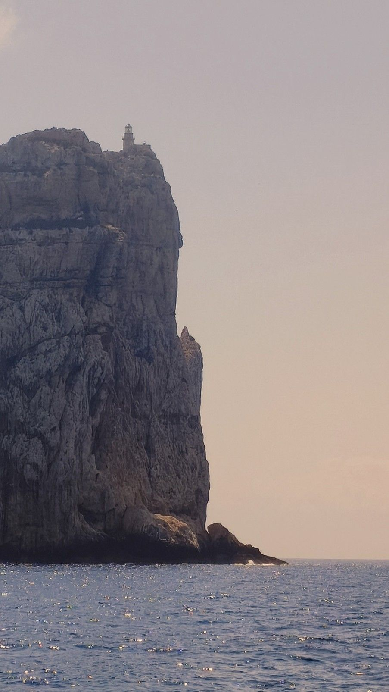

Ciao, sono Fabrizio
Radici al Sud, orizzonti senza confini.
Falanghina nel bicchiere, Inter nel cuore, soul nelle cuffie. E una strada da percorrere: il giro della Sardegna in bici.
↓ scorri: ogni passione ha la sua carta

Napoli → Preganziol
Radici
Sono Fabrizio, campano di nascita. Mi hanno insegnato il calore, l'ironia e quel modo tutto nostro di prendere la vita. Certe radici non si perdono: scorre 'o sang napulitan!
Poi ho messo radici a Preganziol, in Veneto. Qui il Prosecco è quasi una religione, ma io resto fedele alla mia Falanghina. Ognuno ha le sue certezze!
Campano di nascita, trevigiano d'adozione: mi sono portato dietro l'ironia, il calore e la convivialità del Sud, e ho imparato ad apprezzare anche i ritmi più tranquilli del Nord. Ma su una cosa non transigo: il caffè deve essere napoletano!
La bici: gambe, strada e libertà
Il prossimo traguardo in sella (salite escluse, se possibile).
Gravel, strada, cicloturismo e qualche rullo quando il meteo fa il difficile. Mi piace scoprire percorsi nuovi e dividere la fatica con gli amici. Il prossimo progetto? Il giro della Sardegna, possibilmente senza guardare troppo il dislivello!
Per lavoro ho girato l'Italia in lungo e in largo, da Nord a Sud, dalle montagne al mare. In oltre 25 anni ho visto città, alberghi e soprattutto tante persone, e ho scoperto che i ricordi più belli sono quasi sempre gli incontri.

Un faro in cima, il mare sotto. Il viaggio che mi piace.
Falanghina: questione di appartenenza
I bicchieri di Falanghina di una vita. Con moderazione, almeno sulla carta.
Non è solo un vino, è un pezzo di casa. Mi piace girare cantine, scegliere bottiglie e curare la mia piccola collezione, con sempre qualcosa di buono da stappare. Il Prosecco non me ne voglia!
Calcio, fede e due leggende
Una sola squadra. Neroazzurra. Non si discute.
L'Inter è una fede, il fantacalcio con gli amici un rito fatto di aste, strategie, intuizioni geniali e qualche imprecazione di troppo.
Cuore napoletano, fede interista e una certezza: il calcio vero sa ancora farci sognare!
Perché certe emozioni vanno oltre il tifo. È Napoli, è appartenenza, è orgoglio. Per chi ha radici partenopee non sarà mai solo un calciatore.
Perché quel 9 neroazzurro era pura magia. Velocità, potenza, eleganza: ti alzavi dal divano ancora prima del gol.
La colonna sonora
Soul & R&B
Da Amy Winehouse a Barry White, fino a Zucchero. Mi piacciono le voci calde, i groove e le canzoni che creano l'atmosfera giusta. In casa, in macchina o in sella, qualcosa suona sempre.
Fotografia e viaggi
Occhi aperti
Quando non viaggio per lavoro, viaggio per piacere: in bici, con la macchina fotografica al collo, o solo con la voglia di vedere un posto nuovo. E se capita un tramonto bello, mi perdo lì dietro volentieri.
Macchina fotografica, action cam e drone: mi piace guardare il mondo da prospettive diverse. Non serve andare dall'altra parte del pianeta per trovare qualcosa di bello, basta imparare a guardarsi intorno (e ogni tanto alzare il drone).
Tecnologia e piccoli esperimenti
Un'idea, con me, diventa un'app.
Sono curioso, pratico e con la testa sempre in movimento. Mi piace capire come funzionano le cose e, quando manca uno strumento che mi serve, me lo costruisco da solo. Tecnologia e intelligenza artificiale sono diventate le mie complici.
Amo tutto ciò che semplifica la vita. Invento strumenti, sviluppo piccole app e trasformo le idee in cose vere. Alcune delle mie creazioni le trovi proprio qui.
Il lato verde
Basilico, salvia, peperoncini, pomodorini e qualche fiore. Mi piace mettere le mani nella terra e vedere cosa succede. Anche se ogni tanto le piante hanno opinioni diverse dalle mie!
Cercasi compagno di avventure
Un cane sarebbe il compagno perfetto per passeggiate, viaggi e rientri a casa. Candidature aperte, coccole e biscotti inclusi.
Una cosa è certa…
Sempre una strada da percorrere
Non sono uno che sta fermo troppo a lungo. Mi piace imparare, progettare, sperimentare e partire per una nuova avventura, con sempre qualcosa da aspettare.
La domenica ideale? Una pedalata con gli amici, l'Inter in tv, un buon bicchiere e del soul in sottofondo. Con qualcosa di buono da mangiare, ovviamente.
Nel cassetto ho due desideri: girare tutta la Sardegna in bici e trovare un amico a quattro zampe che mi accolga quando torno a casa.